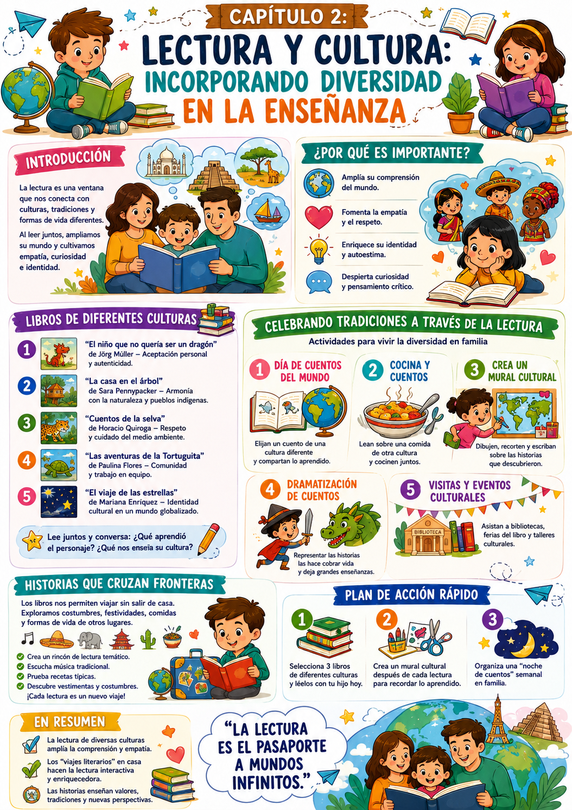

Imaginate a tu hijo sumergido en un mundo donde las historias trascienden fronteras — un rincón de la India, una selva en África, un pueblo en México. La lectura no solo enseña a descifrar letras, también es una ventana a la diversidad del mundo.
Al introducir libros de diferentes culturas y tradiciones, no solo ampliás el horizonte de tu hijo — también fomentás su empatía, su curiosidad y su comprensión de que hay muchas formas válidas de vivir y de ver el mundo.
Libros de otras culturas
Historias que muestran realidades distintas — cómo viven, qué comen, qué celebran otras personas alrededor del mundo.
Cocina y cuentos
Leer sobre una cultura y después cocinar un plato típico de ese lugar. Aprendizaje sensorial que no se olvida.
Viajes literarios
Un rincón de lectura que cada semana viaja a un país diferente — con música, recetas y libros de ese lugar.
Por qué la diversidad cultural en la lectura importa
Un chico que lee sobre realidades distintas a la suya desarrolla empatía hacia lo diferente — y eso lo acompaña toda la vida. Los libros son la forma más accesible de viajar sin moverse del sillón.
✅ Antes de arrancar

Tuki te dice:
Cada libro de otra cultura es un viaje. Y los viajes cambian la forma en que vemos el mundo — y a las personas que lo habitan.
Para entender cómo funciona la lectura multicultural, veamos qué pasa cuando un chico se encuentra con una historia de un mundo completamente distinto al suyo.
Historias que cruzan fronteras
Empatía · Identidad · Perspectiva
Las historias de otras culturas le dan al chico algo que muy pocas experiencias pueden dar: la posibilidad de ver la vida desde una perspectiva completamente diferente a la propia. Eso amplía el mapa mental sobre cómo es el mundo.
Un cuento de origen japonés, mexicano o africano no es solo entretenimiento — es una ventana a valores, tradiciones y formas de resolver problemas que el chico no conocía. Y eso genera preguntas. Y las preguntas generan aprendizaje.
La identidad propia se fortalece
Paradójicamente, leer sobre otras culturas ayuda al chico a entender mejor la suya propia. Al ver lo que es diferente, también empieza a ver lo que es único en su propia forma de vivir.
Libros recomendados para empezar
Por edad y temática
Algunos libros concretos para incorporar la diversidad cultural desde edades tempranas:
- 📖"Cuentos de la selva" (Horacio Quiroga) — Conecta con la naturaleza desde la tradición latinoamericana.
- 📖"El niño que no quería ser un dragón" (Jörg Müller) — Cuestionar expectativas culturales y valorar la autenticidad.
- 📖Libros de Mo Willems o Julia Donaldson — Perspectivas del mundo anglosajón con valores universales.
- 📖Cuentos indígenas latinoamericanos — Comunidad, naturaleza, trabajo en equipo desde tradiciones propias de la región.
Tip para elegir
Buscá libros que hablen de situaciones cotidianas — una comida, una celebración, una amistad — desde otra cultura. Lo cotidiano conocido en un contexto diferente es lo que más activa la curiosidad.
Tuki te dice:
No hace falta viajar para conocer el mundo. Un libro bien elegido lleva a tu hijo a la India, a México o a Japón — sin salir del cuarto.
Tres estrategias para incorporar la diversidad cultural en la lectura — el día de cuentos del mundo, cocina y cuentos, y los viajes literarios en casa.
Día de cuentos del mundo
Un día por semana · Rotación de culturas
Designá un día a la semana donde cada miembro de la familia elige un cuento de una cultura diferente. Después de leer, comparten sus impresiones.
- 1Cada semana, una cultura diferente — puede ser el país de un personaje histórico que estén aprendiendo, un lugar que les llame la atención, o simplemente elegido al azar.
- 2Armá una tabla simple donde registren las historias, los países de origen y lo que aprendieron.
- 3Después de la lectura, cada uno comparte: "¿qué te sorprendió?" o "¿qué te parece diferente a como vivimos nosotros?"
- 4Con el tiempo, la tabla se convierte en un "mapa de viajes literarios" — pueden marcarlo en un mapa del mundo.
Cocina y cuentos
Aprendizaje sensorial · Lo que se come se recuerda
Elegí un libro sobre una cultura y después cocinen un plato típico de ese lugar. El aprendizaje sensorial — tocar, oler, saborear — fija la experiencia de una forma que la lectura sola no puede.
- 1Elegí el libro y la cultura — si el cuento es sobre una fiesta en India, buscan una receta simple de esa tradición.
- 2Cocinan juntos mientras hablan sobre la cultura del libro.
- 3Comen lo que prepararon mientras relatan lo que aprendieron de la historia.
- 4Pueden hacer una "reseña" del plato y del libro — ambas cosas juntas crean un recuerdo muy rico.
Ejemplo concreto
Leen un cuento sobre una familia japonesa. Después preparan onigiri (bolitas de arroz) con ingredientes simples. Mientras comen, hablan sobre las diferencias y similitudes con su propia familia.
Viajes literarios en casa
Un rincón · Una cultura · Una semana
Cada semana, el rincón de lectura "viaja" a un país diferente. Música de fondo, decoración simple, libros de ese lugar — la inmersión hace que el aprendizaje sea mucho más profundo.
- 1Elegí el país de la semana juntos — puede ser un lugar que él mencionó, que estudió en la escuela o que simplemente le llama la atención.
- 2Buscá música tradicional de ese país para poner de fondo durante la lectura.
- 3Armá el rincón con algo visual — una imagen, un objeto, los colores de la bandera.
- 4Leán libros, vean un video corto, cocinen algo típico — la inmersión de varios sentidos multiplica el aprendizaje.
Tuki te dice:
El mundo tiene miles de historias esperando ser contadas. Cada libro de otra cultura es una nueva forma de entender lo que significa ser humano.
Tres acciones concretas para arrancar esta semana — el mural cultural, la noche de cuentos del mundo y el primer viaje literario.
Acción 1 — Elegí 3 libros de diferentes culturas
Seleccioná tres libros de culturas distintas — una latinoamericana, una europea y una asiática, por ejemplo. Leé el primero con tu hijo esta semana. Hacélo interactivo: "¿qué te parece cómo vive este personaje?"
Acción 2 — Mural cultural en casa
Después de cada libro de otra cultura, que él dibuje o recorte algo que represente lo que aprendió. Con el tiempo, el mural se convierte en un registro visual de todos los países que "visitaron" a través de los libros.
Acción 3 — Noche de cuentos del mundo
Organizá una noche donde cada miembro de la familia cuente o lea una historia de su cultura o de un país que le interese. Después, todos comparten qué aprendieron. Hacélo con música de fondo y algo rico para comer.
- 1Elegir libros demasiado complejos: que sean accesibles en lenguaje y en tema. Lo importante es la conexión emocional, no la complejidad literaria.
- 2No hacer preguntas: leer sin conversar después pierde la mitad del potencial. Las preguntas abiertas son las que activan la reflexión cultural.
- 3Quedarse solo con los clásicos: hay literatura contemporánea increíble de todo el mundo. No te limitás a lo conocido.
- 4Presentarlo como "clase de geografía": si lo enmarcás como aprendizaje escolar, pierde la magia. Que sea exploración, aventura, viaje.
- 5No conectar con la vida del chico: el aprendizaje cultural se consolida cuando se relaciona con algo que él ya conoce. "¿Qué harías vos en su lugar?" es la pregunta clave.
Tuki te dice:
En el próximo capítulo vemos cómo crear materiales de lectura en casa — libros caseros, tarjetas interactivas y juegos de rol literarios que hacen que la lectura sea todavía más personal.
Esta infografía resume las estrategias de lectura multicultural y los viajes literarios en casa.

Infografía · Bono 3 Cap 2 — Lectura y Cultura
Tuki te dice:
¡Muy bien! En el Cap 3 vemos cómo crear materiales de lectura en casa — libros caseros, tarjetas y juegos de rol que hacen la lectura todavía más personal.